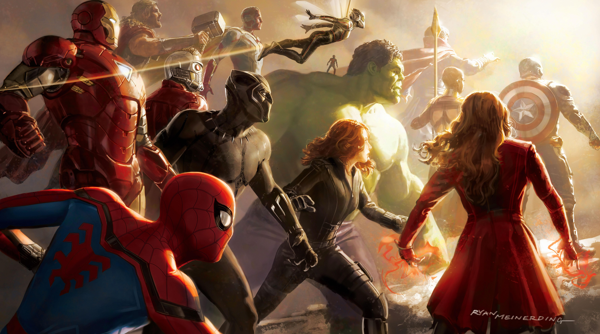

Series y peliculas

¡Bienvenido a tu rincon favorit para ver series y peliculas! Por aqui enocntraras recomendaciones, resumenes de los ultimos estrenos para que no pierdas tiempo buscando que poner en la pantalla. Ya sea peliculas de accion, una comedia para pasar el rato o una serie larga para engacharte por unos dias. ¡Aqui te ayudamos a encontrar lo que de verdad quieres!
Series y peliculas
¡Bienvenido a tu rincon favorit para ver series y peliculas! Por aqui enocntraras recomendaciones, resumenes de los ultimos estrenos para que no pierdas tiempo buscando que poner en la pantalla. Ya sea peliculas de accion, una comedia para pasar el rato o una serie larga para engacharte por unos dias. ¡Aqui te ayudamos a encontrar lo que de verdad quieres!
Series
Desde dramas intensos y comedias, hasta thrillers llenos de misterio que resolver.
- Off-Campus
Serie romantica universitaria que sigue la historia de Hannah, una estudiante normal y Garrett, el capitan de hockey.
- The summer i turned pretty
Serie romantica estadounidense, basada en la trilogia homonima de Jenny Han.
- La timonel
.png)
Serie juvenil canadiense que sigue a Teangan Tao, una remera de 16 años, se muda a un nuevo instituto y termina como timonel del equipo masculino de remo.
Peliculas:
Desde peliculas mas taquilleadas del cine, hasta joyas ocultas para disfrutar en casa.
- White Chicks
.jpg)
La pelicula sigue a Kevin y Marcus Copeland, dos hermanos y agentes de FBI que reciben una mision de proteger a las hermanas Wilson.
- Urcharted
Pelicula basada en una de las series de videojuegos mas vendidas por la critica de todos los tiempos. Presenta a un Nathan Drake, un joven astuto en su primera aventura como cazatesoros.
- No way home
.jpg)
Pelicula estadounidense desuperheroes basada en Spider-man.
Mi serie y pelicula favorito
Mi serie favorito es Off-Campus y mi pelicula favorita es la de white-chicks
Me encanta pasar tiempo con mis amigos viendo peliculas o series, con algunos aperitivos como palomita o chuches.
Muchos de mis amigos tiene pagina original, pero algunos lo tiene en pirata.